Playa Pampatar
-Es una tranquila bahía de aguas cristalinas y bajo oleaje, ubicada en la ciudad de Pampatar, capital del Municipio Maneiro en la Isla de Margarita, Venezuela.
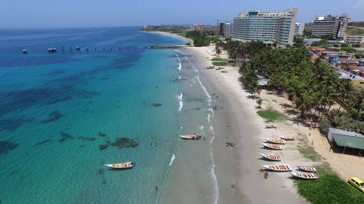
- Características principales
- Oleaje calmado: Sus aguas tranquilas la hacen ideal para familias con niños y para nadar sin preocupaciones.
- Ambiente tradicional: Está rodeada de coloridos botes de pescadores artesanales y una variada oferta gastronómica local con restaurantes a orillas del mar.
- Atardeceres espectaculares: Es uno de los mejores lugares en la zona para disfrutar de hermosas puestas de sol sobre la bahía.
- Cerca de esta tambien se encuentran ubicaciones con un valioso patrimonio histórico como lo llegan a ser:
- -El Castillo de San Carlos De Borromeo el cual es una emblemática fortificación colonial situada justo a la orilla de la bahía y muy cerca de la zona de playa principal de Pampatar, construida para defender la isla de ataques corsarios.
- -El Santuario del Santisimo "Cristo del Buen Viaje" es el templo católico más representativo de la localidad, situado muy cerca de la línea costera y del malecón de Pampatar.
- -La Casa de la Aduana de Pampatar, Comando Guarda Costa Pampatar es una edificación colonial situada a pocos metros de la orilla, que funcionaba como punto de control comercial durante la época virreinal.
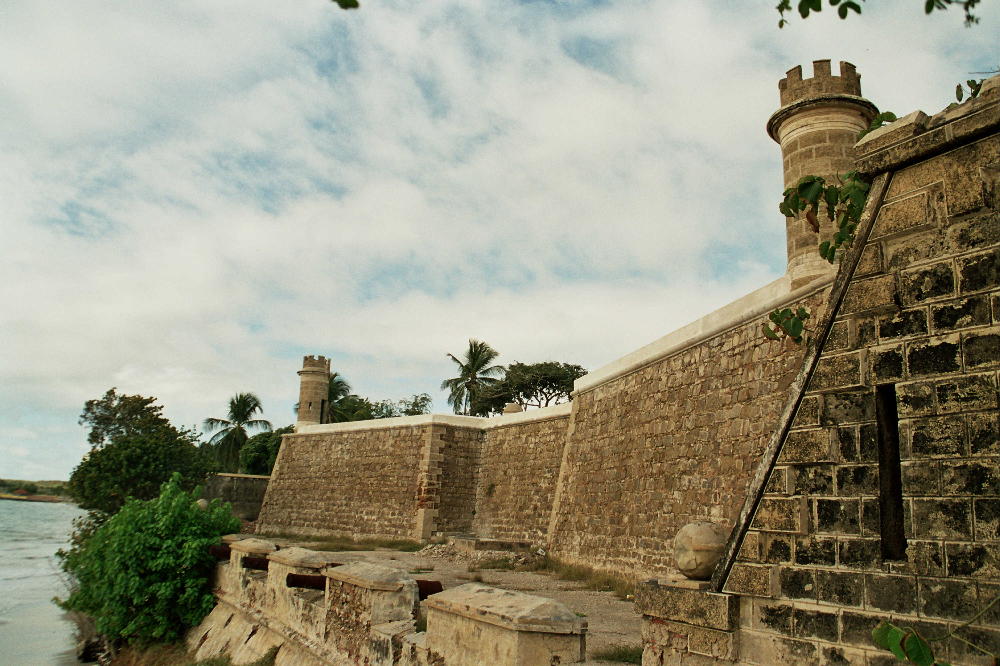
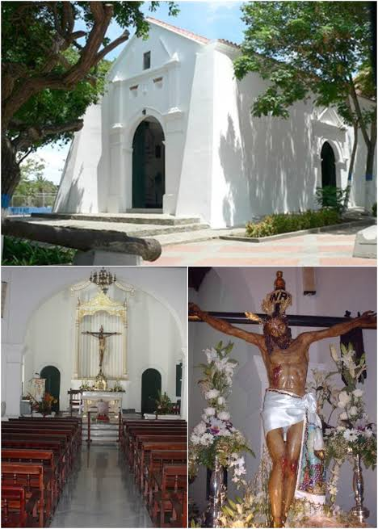
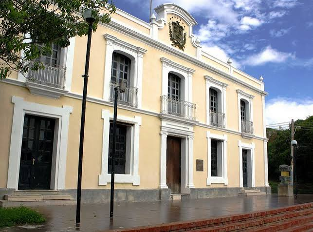
Playa Parguito
-Es una conocida playa siendo una de las más dinámicas y concurridas de la Isla de Margarita, ubicada en el extremo noreste de la isla en el Municipio Antolín del Campo, estado Nueva Esparta.
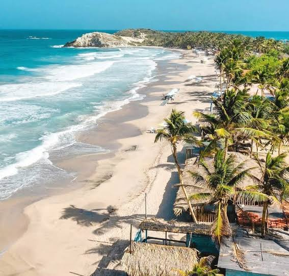
- Características principales
- Oleaje y surf: Sus olas constantes y fuertes la convierten en el escenario predilecto para surfistas y entusiastas de los deportes acuáticos.
- Ambiente tradicional: Está rodeada de coloridos botes de pescadores artesanales y una variada oferta gastronómica local con restaurantes a orillas del mar.
- Arena dorada: Ofrece una amplia franja de arena abierta ideal para disfrutar del sol y caminatas a lo largo de la costa.
- También no muy alejada de la zona se encuentran ubicaciones valiosas tanto por patrimonio histórico como por ser ubicaciones turísticas que son visitados con recurrencia:
- -La Iglesia Parroquial San José de Paraguachí es un destacado patrimonio religioso e histórico situado en las inmediaciones del municipio, muy cerca de la franja costera.
- -El Cerro Matasiete es un hito montañoso e histórico localizado a poca distancia hacia el interior, ligado estrechamente a la memoria independentista de la isla.
- -Playa El Agua se encuentra ubicada justo al lado de Parguito, constituyendo una de las extensiones de arena más reconocidas y visitadas de Margarita.
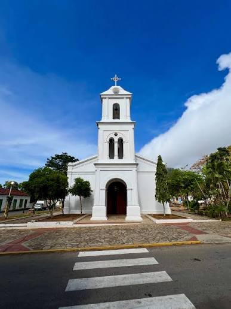
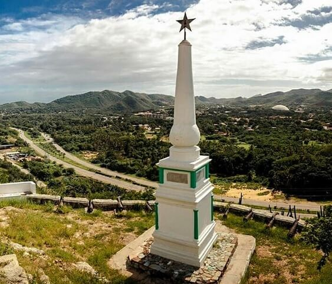

Playa Guacuco
-Es una de las costas más populares y hermosas de la Isla de Margarita, ubicada en el municipio Arismendi, destacándose por su extenso arenal dorado y su ambiente animado frente al mar Caribe.
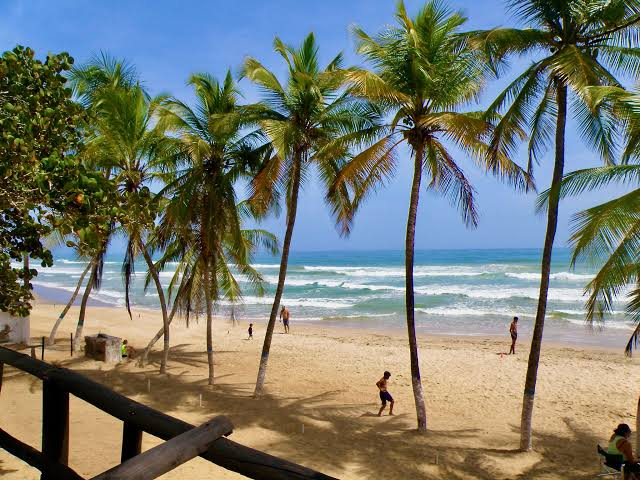
- Características principales
- Oleaje calmado: Oleaje Sus aguas tranquilas la hacen ideal para familias con niños y para nadar sin preocupaciones.
- Ambiente tradicional: Está rodeada de coloridos botes de pescadores artesanales y una variada oferta gastronómica local con restaurantes a orillas del mar.
- Atardeceres espectaculares: Es uno de los mejores lugares en la zona para disfrutar de hermosas puestas de sol sobre la bahía.
- Cerca de esta tambien se encuentran ubicaciones con un valioso patrimonio histórico como lo llegan a ser:
- -El Castillo de Santa Rosa de la Eminencia es una imponente fortificación histórica situada en la vecina ciudad de La Asunción, construida para proteger la capital insular tras los ataques coloniales.
- -El Castillo de Santa Rosa de la Eminencia es una imponente fortificación histórica situada en la vecina ciudad de La Asunción, construida para proteger la capital insular tras los ataques coloniales.
- -El Museo Nueva Cádiz es un importante recinto cultural situado en La Asunción que preserva la memoria histórica de las primeras fundaciones españolas en Sudamérica.
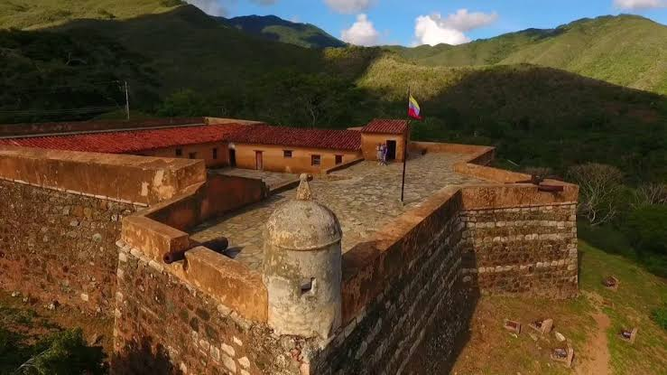
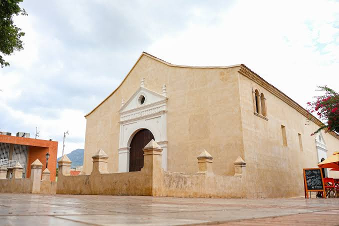
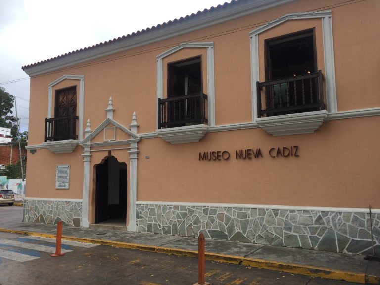